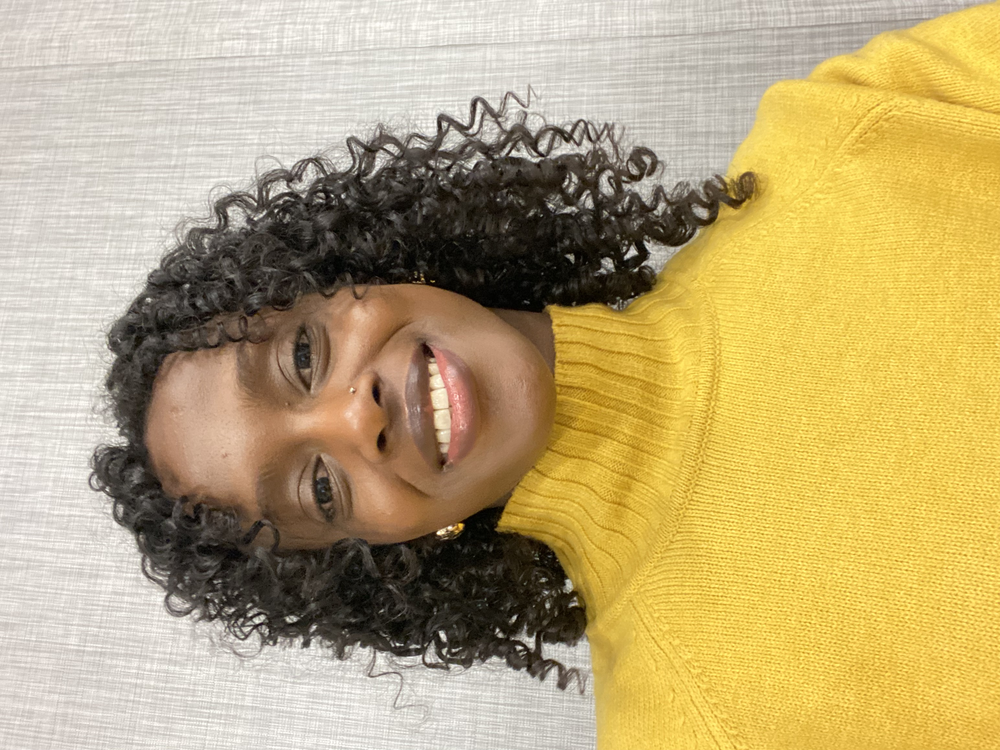

It means "important" in Somali. I'm still working on living up to that.

At 12 years old, I secretly took the entrance exam to a boarding school in Somalilandan unrecognized country in the Horn of Africa, mostly to escape household chores and the traditional expectations placed on girls. I never imagined that decision would eventually bring me to the United States for my education, let alone to Brown University, where I earned both my bachelor's and master's degrees in computer science (my mom still doesn't know what an Ivy League school is).
Since then, I've contributed to AI research and served as a teaching assistant for several computer science courses at Brown. I'm passionate about education and learning in all its forms: how humans learn, how machines learn, and how we can build AI systems that help people access knowledge and opportunity.
Outside of work, I enjoy calisthenics, soccer, strength training, and chasing a runner's high.
Research
A new method for improving how vision-language models understand relationships between objects in images. Built CROCO, a refined dataset from COCO that distinguishes static from dynamic visual relationships, and designed a contrastive loss function that outperforms existing approaches on the task.
A method for teaching vision-language models to recognize abstract concepts beyond objects and relationships. Introduces MAGIC, a grouped image-caption dataset, and a novel grouped contrastive loss that induces models to encode higher-level semantic abstractions as an emergent capability — without ever being shown the higher-level concepts directly.
Projects
End-to-end pipeline for turning real people into animatable 3D avatars. Captured multi-angle depth data with an Azure Kinect, fused point clouds in CloudCompare via ICP, reconstructed surfaces using the Ball-Pivoting Algorithm, refined meshes in Blender, and fitted SMPL-X with kNN skinning weight transfer to drive motion-capture animations.
Secure voting system for k-of-t elections using additively homomorphic ElGamal encryption, zero-knowledge proofs, blind RSA signatures, and threshold decryption. End-to-end verifiable while preserving ballot secrecy.
Fine-tuned BERT for extractive QA on the Natural Questions benchmark. Custom loss functions and preprocessing brought competitive F1 (53.8%) without architectural changes.
ML pipeline to detect depression signals in Reddit posts, combining LDA topic modeling and RoBERTa embeddings as features for random forest classifiers.
Multimodal price prediction combining VGG16 image features and spaCy text embeddings with gradient boosting. Handles both visual and textual listing data.
Essays on things I'm learning, thinking about, and trying to figure out.
Loading...